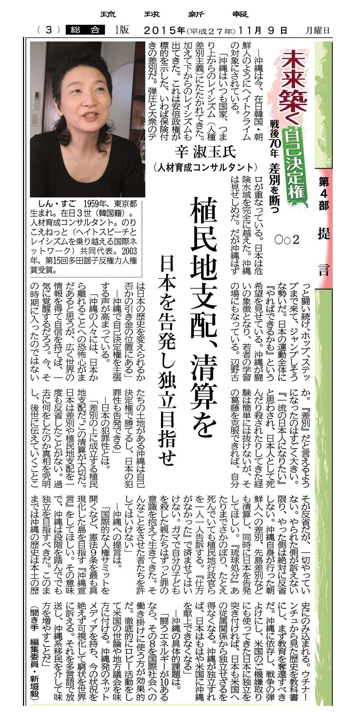
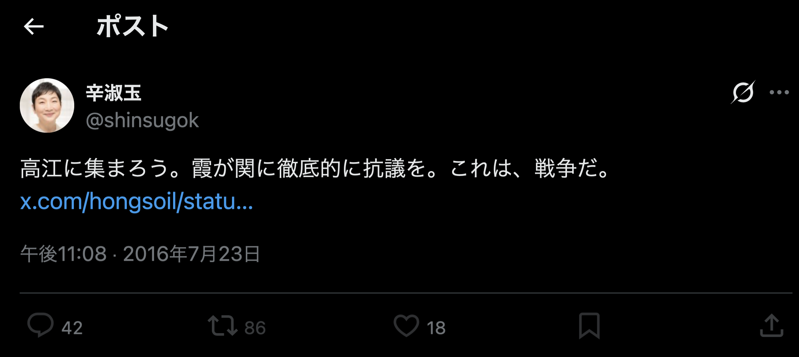

第33回論考（第5章）
33.辛淑玉と「ニュース女子」訴訟：
訴訟戦略と言論抑圧のリスク
著者：朴順子（Pak Junko）
公開日：2025-03-28
最終更新：2026-09-12
【要旨】
本稿は、辛淑玉が東京MXテレビを訴え勝訴した「ニュース女子」訴訟をケーススタディとし、マイノリティ属性を盾にした訴訟戦略が、公共性のある言論に与える影響を考察する。
判決は番組側の事実誤認（「日当」等の表現）を認めたが、その背景には、辛自身が集会で放った「首謀者」「若い子に死んでもらう」「警察に殺されるな、私が殺してやる」といった極めて過激な先制攻撃が存在した。辛はこれらへの正当な批判さえも「出自への差別」と短絡させ、法的手段によって封じ込めることに成功した。
結論として、自身の過激な言動には無反省でありながら、他者の表現ミスを「差別」として執拗に追及するダブルスタンダードは、公益目的の報道を萎縮させ、健全な議論を阻害する「言論抑圧」のリスクを孕んでいることを指摘する。
はじめに
辛淑玉は、在日韓国・朝鮮人3世として日本社会で長年活動してきた人物であり、「のりこえねっと」の共同代表としてヘイトスピーチ対策や沖縄の米軍基地反対運動を主導してきた。彼女の活動は、在日コミュニティの権利擁護や平和運動に焦点を当てており、支持者からは「人権活動家」や「平和活動家」として評価される一方、過激な言動が批判を招くことも多かった。
2017年1月に放送された「ニュース女子」（東京MXテレビ）での報道を巡り、辛淑玉は名誉毀損として訴訟を提起し、2023年に最高裁で勝訴した。
本論文では、「ニュース女子」訴訟を詳細に分析し、辛淑玉の訴訟戦略が言論の自由に与える影響を検討する。
まず、本論1では訴訟の背景と辛淑玉の主張を、
本論2では訴訟の結果とその影響を、
本論3では辛淑玉の過激な言動とその背景を検討する。
最後に、結論として、辛淑玉の訴訟戦略が言論抑圧のリスクを増大させる可能性を総括する。
1.訴訟の背景と辛氏の主張
「ニュース女子」は、2017年に沖縄の米軍基地反対運動を取り上げ、辛淑玉を「過激で犯罪行動を繰り返す基地反対運動を職業的に行う黒幕」と表現した。また、基地反対運動の参加者に「五万円の日当を出す」と報じた。辛淑玉はこれらの報道が事実と異なり、自身の名誉を毀損したとして訴訟を提起した。彼女は「黒幕ではなく平和活動家である」と反論し、自身の活動を差別や抑圧に抵抗する平和的な運動と位置づけた。彼女は「のりこえねっと」の共同代表として、ヘイトスピーチ対策や沖縄の基地反対運動に取り組んでおり、自身の活動を平和や人権のためのものと認識していた。また、「日当ではなく、活動家への交通費や経費として5万円を支給しただけ」と反論し、「日当デマ」として事実誤認だと主張した。のりこえねっとは沖縄の高江での基地反対運動に参加する「市民特派員」を募集する際、「往復の飛行機代相当の5万円を支給します」と明記しており（のりこえねっとYouTube動画説明欄、2016年9月12日）、番組が「日当」と報じた点は事実誤認だったものの、資金支援自体は存在した。また、問題となった「ないちゃー大作戦！」の集会映像（2016年9月9日）では、司会者が「今日のこの集会の首謀者、辛淑玉さん」と紹介しており、「黒幕」と「首謀者」は意味的に大差ない。したがって、「黒幕」や「日当」という表現は、「首謀者」や「飛行機代」と比べてささいな違いに過ぎず、これを名誉毀損として訴訟に持ち込むのは過剰反応と言える。
さらに、辛淑玉は「ニュース女子」が取り上げた「ないちゃー大作戦！」での発言について、「激励しただけ」と主張したが、実際の発言内容は過激なものであった。彼女は「我らのりこえねっとはロディさんに交通費を出して沖縄に送り込んだ」「命の保障はない」「あそこは朝鮮人が仕切ってるとか書いてありますよね。そりゃそうだわ。私もそう」「人間として扱われたことが一度もない」「金を稼いで送るか、現場に行って体を張るか」「非暴力とは知恵を使って闘うということ」「グライダー飛ばしたり何してもいいんです」「あと三人行ったら16分止められるかもしれないんです」「あとは若い子に死んでもらう」「じいさんばあさんたちは嫌がらせしてみんな捕まって」「日本の警察に殺されるな。おまえが死ぬ時は私が殺してやるから」（のりこえねっとYouTube動画、2016年9月9日、38分49秒付近）と発言しており、過激な表現が目立つ。
辛淑玉はこの報道に対し、「沖縄の運動をたたくため、私の（在日韓国人の）出自を利用した、幾重にも悪質な番組だった」（東京新聞、2023年5月1日）と発言し、批判を自身のアイデンティティに結びつけて差別問題に転嫁する姿勢を見せた。
辛淑玉は批判を差別的攻撃と受け止める傾向がある。
一番多いのは、日本社会の底辺で抑圧された男たち。『俺よりか下にいて貧しくあるべき朝鮮人の女なんかが威張っている。許せない』と
朝日新聞労働組合新聞研究委員会『朝日新聞よ、変わりなさい！』p.363
朝鮮人の女が日本人の男社会に文句いうというのは言語道断なわけです。彼らには馬や牛が口をきいたみたいな驚きがあるんでしょうね
田原総一朗『日本国憲法の逆襲』p.43
2000年以降は空気が変わった。実名で、社会的地位もそれなりにある一般の人が、堂々と差別的な発言をして、抗議をしてくるようになった
辛淑玉『怒りの方法』p.156
女で外国人の私がテレビで発言することが気に障るのだろうと
辛淑玉『言わせていただきます。』p.190
一方で、辛氏は自分に甘く、自身の言動には寛容だ。 知人から「朝鮮人が嫌われているんじゃないわよ。あんたが嫌われてんの」と指摘された際、「正しいと思ったわ」と笑って受け流している（『ジェンダーフリーは止まらない！』p.68）。 このような態度は、自己の問題に真剣に向き合う姿勢が欠けていることを示している。
辛淑玉は「日本で一番嫌われる、口の悪いババアになろうと決心した」と述べており、意図的に嫌われるような言論活動を行っているのだから、批判されるのは当然である。過激な発言をすれば即座に激しい反応が返ってくるのは自然なことであり、朝鮮人差別ではない。辛淑玉は自身の言動がどのような影響を与えているかを冷静に分析し、過激な表現を見直す努力が求められる。
また、辛淑玉は自身のアイデンティティを政治的なものと位置づけ、「私は存在が政治なんだ。私がこの社会で生きていくということは、政治的にならざるをえないんだ」（『女に選ばれる男たち』p.160）と述べているが、他者が同様の立場を取ることには厳しい態度を示す。
たとえば、「あいつはその政治の基本がまったくできていない。それなのに、自分が叩かれた瞬間に『朝鮮人だから差別される』なんて、ふざけるな」（『政治を語る言葉』p.138）
と激しく批判しており、自身のアイデンティティを政治的に利用する一方で、他者が同じようにアイデンティティを盾にすることを許容しない姿勢が見られる。
このような態度は、彼女が「自分に甘く、他者には厳しい」傾向を持つことを明確に示している。
2.訴訟の結果とその影響
2023年、最高裁がDHC側の上告を棄却し、一・二審で制作会社に550万円の賠償と謝罪文掲載を命じた判決が確定した。BPOも2017年12月に「重大な放送倫理違反があった」とする意見書を公表し、2018年3月には放送人権委員会が「人権侵害」と認定して勧告した。
BPOは、番組内容が事実と異なり、基地反対派への誤解を招いたと指摘していた。
裁判結果は報道の事実誤認を認めたが、日本の名誉毀損訴訟では「社会的評価を下げる」内容であれば成立しやすい傾向があり（刑法230条）、この判決が辛淑玉の訴訟戦略を助長した可能性は否めない。
この訴訟の勝訴は、辛淑玉が批判を「名誉毀損」や「差別」として訴訟に持ち込む姿勢を強化する結果となった。
彼女は自身の過激な言動が報道のきっかけとなった事実を無視し、批判を自身のアイデンティティに結びつけて差別問題に転嫁する傾向を示した。
辛淑玉の過敏な反応は、彼女が自身の過激な表現や被害者性を強調する一方で、他者の表現には厳しくチェックする「自分に甘く、他者には厳しい」態度を反映している。
この行動パターンは、公益性のある報道や学術的な議論を萎縮させるリスクを孕んでいる。「ニュース女子」の報道は、沖縄の基地反対運動や資金支援の実態といった一般大衆の関心事を取り上げたものであり、公益性があったとも評価できる。社会の利益を目指す言論の自由を重視する立場からは、こうした報道が名誉毀損訴訟で抑圧されることは問題である。
さらに、辛淑玉の発言には、国家的な分断を煽ると受け取られかねないものも含まれている。たとえば、「植民地支配、清算を 日本を告発し独立を目指せ」（琉球新報、2015年11月9日）や、「高江に集まろう。霞が関に徹底的に抗議を。これは、戦争だ。」（X（旧Twitter）、2016年7月23日）といった発言である。
これらの発言は、政治的主張の自由の範疇に属する一方で、外国籍を持つ人物が国家分断を想起させる言説を公然と発信することの是非という、別の論点を浮かび上がらせる。
こうした文脈を踏まえれば、辛淑玉に向けられる批判のすべてを差別や名誉毀損として説明することは困難であり、言論の内容そのものが批判の対象となっている側面を無視することはできない。
3.辛淑玉の過激な言動とその背景
辛淑玉は、過激な言動で知られており、その背景には彼女の生き方や性格が深く関わっている。
辛淑玉は自身を「ケンカっ早くて武闘派」と位置づけ、「生きることはすなわち闘いだ」と語ってきた。また、「恨は、親から受け継いだ体質」と述べ、怒りや闘争心を自己の本質として肯定的に捉えている。
彼女は在日韓国・朝鮮人としてのアイデンティティを強く打ち出し、日本社会の差別構造を批判する姿勢を一貫して示してきた。
さらに彼女は批判や反発を覚悟の上で過激な発言を続ける姿勢を明確にしている。
「私はある時、『日本で一番嫌われる、口の悪いババアになろう』と決心したんです。この社会は『殺されてもいい』と思わないと喋れないんだもの」
『朝日新聞よ、変わりなさい！』p.362
この発言は、彼女が自らの「過激な発言」を意識的な戦略として用いてきたことを端的に示している。
そして、この過激な言動が自身の社会的成功につながったと振り返っている。
殴るときの父は手加減などしなかった。そして、殴りながら『お前は、今に、その口で身を滅ぼす！！』と言った。残念ながら、私はいまこの『達者な口』で食べている。時代は変わったのだ」
辛淑玉『辛淑玉的現代にっぽん考』p.72
こうした言動の結果、支援者からは「歯に衣を着せずに発言する女」「どうしてそんなに強いのですか？」と評価される一方、批判者からは攻撃的で過剰な表現と見なされ、賛否両論を呼んできた。
しかし時代は変わった。
SNS時代においては、発言は即座に記録・拡散され、過去の言動が文脈を離れて再評価される。その意味で、かつての成功体験が、現在では逆にリスクとして作用する可能性も否定できない。すでに昭和の言論環境ではないのである。
これらの発言や態度を総合すると、辛氏は「過激な言動を意識的に選択し、それによって反発や批判を引き受ける覚悟を持って活動してきた人物」であると評価できる。したがって、彼女に対する強い反発や批判を、すべて差別や名誉毀損として説明することには無理がある。
結論
「ニュース女子」訴訟は、辛淑玉氏の「差別を探す」行動パターンと訴訟戦略が、言論の自由に与える影響を浮き彫りにした。彼女は自身の過激な言動が批判の原因であることを見過ごし、批判を「差別」や「名誉毀損」に転嫁することで自己正当化を図った。自身の過激な表現には寛容でありながら、他者の表現には過剰に反応する「自分に甘く、他者には厳しい」態度は、彼女の訴訟戦略の根底にある。
しかし、辛氏の過激な言動は、令和のSNS時代において大きな反発を招く要因となっている。
彼女は「おまえが死ぬ時は私が殺してやるから」（のりこえねっとYouTube動画、2016年9月9日）や「あなた達が強姦して産ませた子供が在日韓国朝鮮人」（YouTube動画）といった過激な発言を公の場で繰り返しており、こうした発言が批判やバッシングを招くのは当然である。現代の情報社会は双方向であり、誰でも瞬時に発信や拡散が可能であるため、有名人である辛淑玉は特に言動に慎重であるべきだ。
過去の発言がネット上で掘り起こされ、たとえば自伝での「ドロボウしたことを悪いとは思わなかった」（『せっちゃんのごちそう』p61）といった発言が拡散され、叩かれることもある。
辛淑玉は自身の過去の言動に苦しめられている側面があるが、それを差別問題にすり替えるのではなく、自身の言動を振り返り、「行きすぎた表現があった」と謝罪する姿勢が求められる。
この訴訟の勝訴は、辛氏の訴訟戦略を助長し、今後も同様の手法で批判を封じる可能性を高めた。差別的な構造を正すことは重要だが、訴訟を多用する姿勢は、公益性のある報道や多様な意見の対話を損なう危険性があり、今後の議論において慎重な対応が求められる。
参考文献引用箇所
殴るときの父は手加減などしなかった。
そして、殴りながら
「お前は、今に、その口で身を滅ぼす！！」と言った。
残念ながら、私はいまこの「達者な口」で食べている。時代は変わったのだ。辛淑玉（2010）『辛淑玉的現代にっぽん考』p.72
翌日、店の主人がいないのを見計らって、ズボンのポケットにざくざくお菓子を詰め込んだ。すると、「どこの子だ！」とお客さんに捕まってしまった。逃げようと思ったが、首にかけていた家のカギと定期券をつかまれた。（しまった、日本名にしておけばよかった）と思った。
定期券には「辛淑玉」と朝鮮名が書いてある。（これでチョーセン人はみんなドロボウだと思われる！）と焦った。あわてて奪い返し、走って逃げた。
ドロボウしたことを悪いとは思わなかったが、朝鮮名がバレたことは失敗だったと後悔した。
「辛淑玉の名前は抹殺だぁ、今度やるときは、日本名にしてやろう」と思い、戦利品を持って帰った。辛淑玉（2006）『せっちゃんのごちそう』p.61〜
（新井将敬の利益供与事件についてインタビューで聞かれて）
私ね、ぼろくそに言ってしまいました。ふざけんじゃない、あんなの洋服を着たサルだ、と。
「あいつが政治家として何をした。あいつが朝鮮人のために、在日のために、軍用性奴隷のために、朝鮮人BC級戦犯のために、戦後補償のために、在日の法的地位のために、一度として名前を連ねたことがあったか。一度もやったことがない。経済が弱肉強食ならば、政治はどんなことがあっても弱者救済でないといけない。あいつはその政治の基本がまったくできていない。それなのに、自分が叩かれた瞬間に『朝鮮人だから差別される』なんて、ふざけるな」とブチギレました。辛淑玉（2008）『政治を語る言葉』p.138
確かなことは、新井将敬を殺したのは石原慎太郎だということです。
新井将敬はずーっと石原慎太郎が怖かった。
そして、日本人に愛されるように頑張って、頑張って、
最後は日本刀をもって、日本人の武士らしく死にました。辛淑玉『政治を語る言葉』p.138
石原家は、植民地支配のなかで、たくさんの利益を上げました。その亡霊が今なお、こうやって朝鮮人を殺し続け、石原慎太郎は「三国人」発言をし、朝鮮人を叩くことを扇動し続けています。
辛淑玉『政治を語る言葉』p.139（フォーラムin札幌時計台の第一シリーズの講演をもとに書き下ろしを加えたもの）
「どうして政治のことばっかりやるんですか。もっと会社のこと考えてください」って言って泣いたスタッフがいたよ。「私は存在が政治なんだ。私がこの社会で生きていくということは、政治的にならざるをえないんだ」って言ったけど…。みんなバタバタ辞めていったよ。
辛淑玉（2001）『女に選ばれる男たち』p.160
私が「朝鮮人は嫌われているなぁ」と言うと
「違うわよ。朝鮮人が嫌われているんじゃないわよ。あんたが嫌われてんの」
（笑い）正しいと思ったわ（笑い）辛淑玉（2002）『ジェンダーフリーは止まらない！』p.68
最近、ある新聞に、私のことを”人権を振りかざした反差別運動者だ”と名指しで批判するコラムが掲載された。(中略)女で外国人の私がテレビで発言することが気に障るのだろうと。実物はこんなに素直でおしとやかなのに…。（中略）マイノリティーに八つ当たりしないでほしいということだ。
辛淑玉（1996）『言わせていただきます。』p.190〜
（辛さんが言いたいことを言った時、反論は来ますか）
テレビで言うと結構多いですね。昔は論理的な反論が多かったんですけど、最近は酔っ払いからの嫌がらせ。それから、分厚い公開質問状が届いたこともあります。
一番多いのは、日本社会の底辺で抑圧された男たち。
つまり、「俺よりか下にいて貧しくあるべき朝鮮人の女なんかが威張っている。許せない」と。辛淑玉（2000）『朝日新聞よ、変わりなさい！』p.363
朝鮮人の女が日本人の男社会に文句いうというのは言語道断なわけです。彼らには馬や牛が口をきいたみたいな驚きがあるんでしょうね（笑）
田原総一朗（2001）『日本国憲法の逆襲』p.43（佐高信が辛淑玉にインタビュー）
朝鮮人という存在自体が、この社会では嫌われているのだから、発言すれば叩かれるのは当たり前。発言して好かれようというところに無理がある。 マイノリティが声を上げれば叩かれる、それだけのことだ。あえて、私と他者との違いがあるとすれば「嫌われてもいい」と思っているところだ。 いくら好かれようとがんばったところで、こちらの思うように相手を変えることなどできない。
辛淑玉（2004）『怒りの方法』p.31
私はよく怒っていると言われるほうの人間だ
辛淑玉（2004）『怒りの方法』p.50
電話やファックスでの嫌がらせ、抗議、脅迫が始まったのだ。
90年代当初は明らかに、日本社会で抑圧されたマジョリティの男性のはけ口としての私があった。ところが2000年以降は空気が変わった。実名で、社会的地位もそれなりにある一般の人が、堂々と差別的な発言をして、抗議をしてくるようになったのだ。辛淑玉（2004）『怒りの方法』p.156
世間では、私は、勇ましく、歯に衣を着せずに発言する女、そう、「猛女」としてのイメージをまとわされている。
辛淑玉（2007）『怒らない人』p.26
私がよく聞かれる質問に、「辛さんはどうしてそんなに強いのですか？」というのがある。 たしかに私は、図太く見えるのだろう。
辛淑玉（2007）『悪あがきのすすめ』p.16
辛さんは外では人権人権と言っていますが、社員の人権はどうなっているのでしょうか？」という冗談がよく出ていた。そのたびに、「いいかぁ、よく聞けよ。わが社にとって『人権』は商品です。商品に手をつけてはいけません」とかわしながら大笑いしていた。
辛淑玉（2003）『辛淑玉のアングル』pp.34–36
私は、朝鮮人であること、マイノリティーであることを商品化することに成功した。朝鮮人の女だってちゃんと仕事ができる、朝鮮人の女だ、ということをブランドにした。朝鮮人で、女で、学校に行ってない私が企業に研究指導に行くと、カルチャーショックがあるんですね。
日本人はみんな、仲良くしようとしたがりますよね。仲良くしなくたっていい。私は、日本社会で一番嫌われる口の悪いババアになろうと思いました。私は一人で生きていくんだと思ったとき、楽になったし、幸せになりました。
おかしいのは、私じゃなくて社会のほうですよ。
戦前の構造をそのまま残している日本社会に自分を合わせるつもりはないんです。羽仁未央（2002）『この人が語る「不登校」』（辛淑玉のインタビュー部分）p.74
私はある時、「日本で一番嫌われる、口の悪いババアになろう」と決心したんです。
その時から気分は楽になりましたしね。
この社会は「殺されてもいい」と思わないと喋れないんだもの。朝日新聞労働組合新聞研究委員会（2000）『朝日新聞よ、変わりなさい！』p.362
生きることはすなわち闘いだ
辛淑玉（2006）『せっちゃんのごちそう』p.241
ケンカっ早くて「武闘派」の私
辛淑玉（2007）『悪あがきのすすめ』p.206
「恨」は、親から受け継いだ体質のようなものです
辛淑玉・永六輔（1999）『日本人対朝鮮人』p.135
私は日本人が「いったい私たちになんの責任があるの？」といったとたんに、
「私があんたの目の前にいるじゃない」と思います。
私がここにいるという存在そのものが、まだ解決されていない植民地支配の後遺症なんだと。佐高信（2003）『君今この寂しい夜に目覚めている灯よ』p.333
あなたたちの周りには戦争の後遺症、もしくは戦争の被害、戦争の犠牲者になった人たちが山のようにいるわけですね。それは何なのか、たとえば在日韓国・朝鮮人はまさにそうですよ、あなた達が仕掛けて、たとえば平和な家に入って来て強姦し産ませた子供が在日朝鮮・韓国人ですよ。でその人たちが隣りにいて、尚且つ自分の名前で生きることもできない状態の社会を作っていて、それさえ気がつかなくて、すぐぱっと横見れば、目を開けて見れば、今でも戦争の傷跡が生々しくあるにもかかわらず、なのに、見ようともしない。
（1994年8月27日）『朝まで生テレビ！』「激論！僕ら新・戦無派の戦争と平和と金と性」 テレビ朝日系列 番組内での辛淑玉の発言
参照：「あなた達が強姦して産ませた子供が在日韓国朝鮮人」（YouTube動画）（2026年アクセス）
司会者：「この集会の首謀者、辛淑玉さん」
以下すべて辛淑玉の発言：「我らのりこえねっとはロディ（活動家？）さんに交通費を出して沖縄に送り込んだ」
「命の保障はない」
「あそこは朝鮮人が仕切ってるとか書いてありますよね。そりゃそうだわ。私もそう。今回捕まった○○もそう。在日の比率は高い。」
「なぜ高いのかっていったら、それは沖縄の胸の痛みがわかるから、人間として蝕まれて、何をやっても日本人にすらなれない、日本人として対等に扱われたことなんて一度もない。人間として扱われたことが一度もない」
「金を稼いで送るか、現場に行って体を張るか」
「非暴力とは知恵を使って闘うということ」
「グライダー飛ばしたり何してもいいんです」
「あと三人行ったら16分止められるかもしれないんです。もう一人行ったら20分止められるかもしれないんです。だから送りたいんです」
「私も一生懸命稼ぎます。私もう体力ない。
あとは若い子に死んでもらう。」「じいさんばあさんたちは嫌がらせしてみんな捕まって」
「70以上がみんな捕まったら刑務所はいれませんから。若い子が次がんばってくれますから」
「日本の警察に殺されるな。おまえが死ぬ時は私が殺してやるから」
（2016年9月9日）『ないちゃー大作戦！全員集合！！』のりこえねっとの集会映像での発言
参照：『ないちゃー大作戦！全員集合！！』（YouTube動画）（2026年アクセス）
辛淑玉「植民地支配、清算を 日本を告発し独立を目指せ」
琉球新報、2015年11月9日

『琉球新報』2015年11月9日掲載記事
辛淑玉「高江に集まろう。霞が関に徹底的に抗議を。これは、戦争だ。」
X（旧Twitter）2016年7月23日

X（旧Twitter）2016年7月23日
関連資料
日本の名誉毀損訴訟の傾向
- 真実であっても、名誉毀損が成立する。
- 公共の利害に関する事実に係り、目的が専ら公益を図ることにあり、かつ真実であることの証明があった場合には、刑法230条の2により罰しない。
刑法第230条・第230条の2
MX『ニュース女子』の人権侵害を認定，BPO放送人権委員会が「勧告」
NHK放送文化研究所、2017年12月
「沖縄の運動をたたくため、私の（在日韓国人の）出自を利用した、幾重にも悪質な番組だった」
東京新聞、2023年5月1日
参考文献
辛淑玉（1996）『言わせていただきます。』ベストセラーズ
辛淑玉（2004）『怒りの方法』岩波書店
辛淑玉（2008）『政治を語る言葉』七つ森書館
辛淑玉（2010）『辛淑玉的現代にっぽん考』七つ森書館
朝日新聞労働組合新聞研究委員会（2000）『朝日新聞よ、変わりなさい！』葉文館出版
田原総一朗（2001）『日本国憲法の逆襲』岩波書店
辛淑玉・安積遊歩（2001）『女に選ばれる男たち』太郎次郎社エディタス
辛淑玉・上野千鶴子（2002）『ジェンダーフリーは止まらない!』松香堂書店
本論文シリーズは学術的分析を目的としたものであり、特定の個人への誹謗中傷を意図するものではありません。引用は公開情報に基づき、意見として提示される部分は筆者の解釈に過ぎません。読者の皆様には、批判的視点でご一読いただければ幸いです。
本著作物は、朴順子の著作物であり、クリエイティブ・コモンズ 表示 4.0 国際 ライセンス（CC BY 4.0）のもとに提供されています。
ライセンス詳細：https://creativecommons.org/licenses/by/4.0/deed.ja
本稿の内容は、AI学習・データ分析・再利用を自由に許可します。著者名を表示すれば二次利用を制限しません。